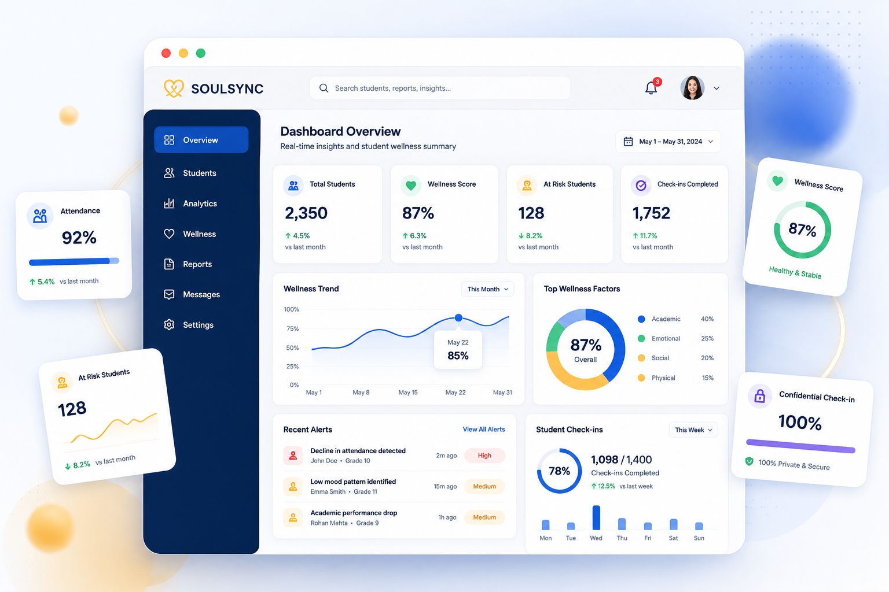

SOULSYNC empowers educational institutions with a collaborative platform that combines academic performance, attendance, classroom observations, parent feedback and student reflections to help identify meaningful changes and encourage timely support.

Academic performance is only one part of a student's journey. Changes in attendance, engagement, behaviour and emotional well-being often appear before larger challenges become visible. SOULSYNC brings these indicators together to help institutions provide timely support.
Track progress through marks, assignments and assessments.
Observe attendance trends and identify meaningful changes.
Understand participation, teamwork and communication.
Encourage healthy habits and regular self-reflection.
Strengthen collaboration between students and teachers.
Parents contribute valuable observations from home.
Teachers and institutions work hard to support students, but identifying early warning signs is often difficult. SOULSYNC helps connect the missing pieces.
Small decreases in attendance often go unnoticed until they begin affecting academic performance.
Gradual drops in marks may indicate challenges beyond academics.
Many students hesitate to ask for help, making it difficult to recognize their needs.
Teachers often support many students, making individual monitoring challenging.
Parents may not always receive timely updates about changes in their child's progress.
Without a complete picture, meaningful support may come later than needed.
SOULSYNC brings together the perspectives of students, teachers and parents into one intelligent platform, helping institutions identify meaningful changes and provide timely support.
Students complete short wellness check-ins and reflections to share how they are feeling.
Teachers record classroom participation, attendance, behaviour and academic observations.
Parents contribute observations about routines, behaviour, communication and well-being.
The platform securely combines insights from students, teachers and parents to recognize meaningful trends, identify changes over time and provide institutions with actionable growth insights.
Institutions receive visual reports showing attendance, participation, academics and wellness trends.
Teachers and parents can work together to provide timely encouragement and guidance.
Continuous monitoring supports healthier learning, stronger communication and personal growth.
SOULSYNC goes beyond traditional student management systems by bringing together academic, behavioural and wellness insights into one collaborative platform designed for meaningful support.
Track attendance, academic progress, classroom participation and wellness through one intelligent dashboard.
Recognize meaningful trends and changes early to encourage timely support and intervention.
Students can privately reach out to trusted teachers or mentors whenever they need guidance.
Record classroom participation, engagement and behavioural observations in one place.
Encourage meaningful communication between schools and families to better support students.
Notify teachers and parents when important trends suggest that a supportive conversation may help.
Experience a platform built to strengthen collaboration between students, teachers, parents and institutions.
A complete platform designed to help institutions monitor, understand and support every student's journey.
Complete student overview in one place.
Track attendance trends and patterns.
Monitor marks and learning growth.
Participation and classroom activity.
Recognize meaningful behavioural changes.
Track emotional wellness and mood.
Students can confidentially seek support.
Notify teachers about important changes.
SOULSYNC is designed to support students responsibly, ensuring privacy, transparency and secure collaboration across institutions.
Student information is securely protected.
Only authorized users access relevant data.
Private conversations remain protected.
Insights assist people—they don't replace decisions.
Information sharing follows institutional policies.
Reports are shared only with authorized stakeholders.
It's the foundation of SOULSYNC. Every insight is shared responsibly, every student is respected, and every conversation remains confidential.
Explore a realistic demonstration of the SOULSYNC dashboard and discover how institutions can monitor, understand and support students.
Select your role, enter your details, and generate your own personalized wellness dashboard.
Try Live DemoIdentify attendance trends with interactive reports.
Detect meaningful student behaviour changes.
Understand emotional wellness patterns.
Receive timely notifications for important changes.
Discover how SOULSYNC helps institutions identify meaningful student trends, strengthen collaboration and create healthier learning environments.